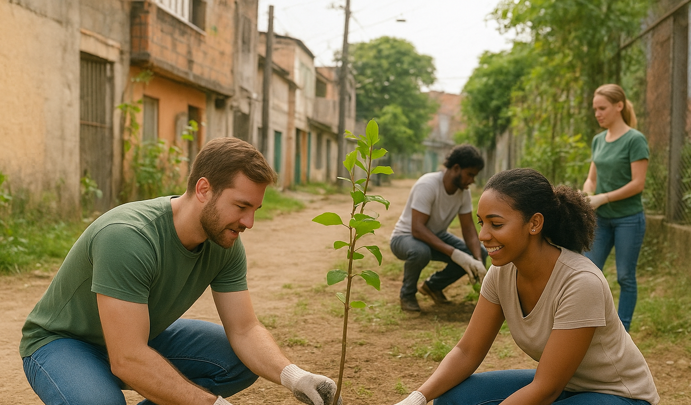

Projeto Educação Viva
Capacitação de jovens em situação de vulnerabilidade social para o mercado de trabalho.
Capacitação de jovens em situação de vulnerabilidade social para o mercado de trabalho.
Reflorestamento urbano e conscientização ambiental em comunidades periféricas.
Contribua com nossos projetos por meio de doações seguras e transparentes.
Seja Voluntário ou Doador